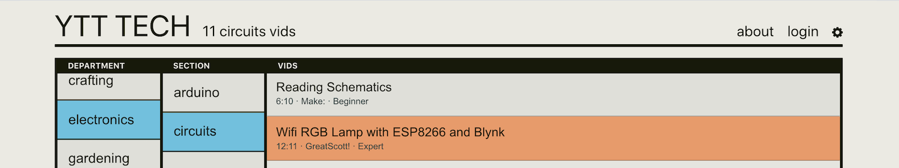
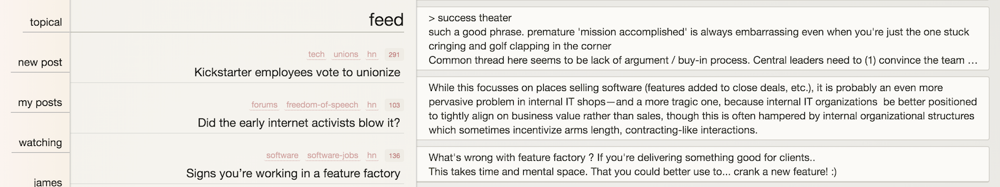
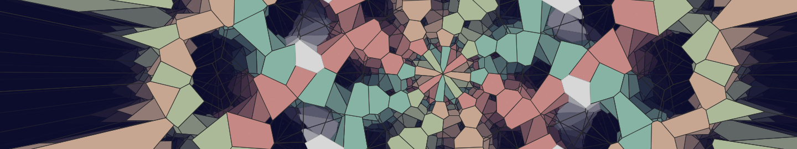
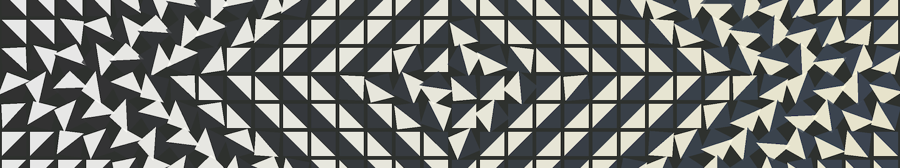

A curated database of instructional Youtube videos where the user can
explore a catalog of subjects and discover new skills. Made
with React, AWS Lambda/SAM, DynamoDB.

An experimental discussion platform that aims to minimize distracting signals and focus on
the conversation. Made with React, mobX, Node.js, Postgres. WIP.

An animated Voronoi diagram visualizer, with an interface for controlling the animation and
creating complex sequences. Made with Processing.

A spinning tile visualization with three control modes for exploring a wide variety of
intriguing patterns. Made with
p5.js.
An LED installation with hand-held controller for modulating patterns. Made
with Teensy, WS2811 LEDs, electrical conduit.
Triangular LED modules with pattern sequencing system. Made with Arduino, WS2811 LEDs,
plywood.